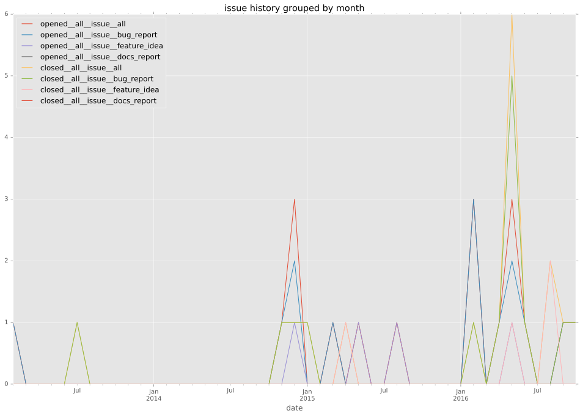
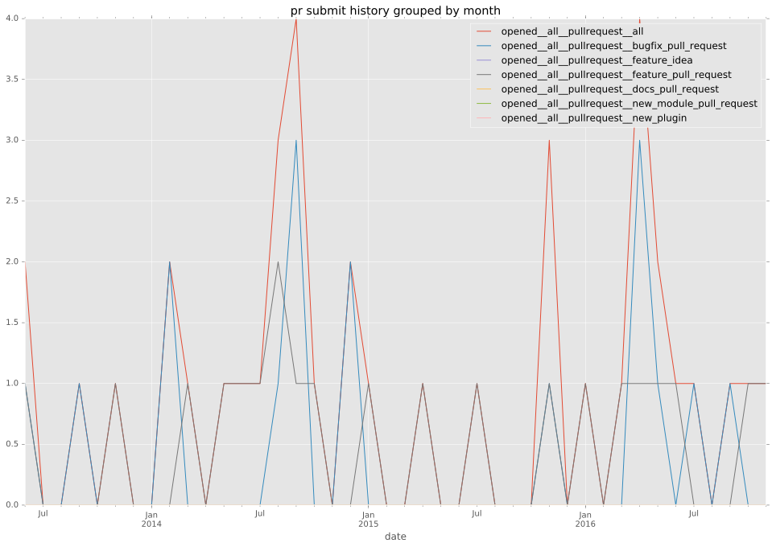
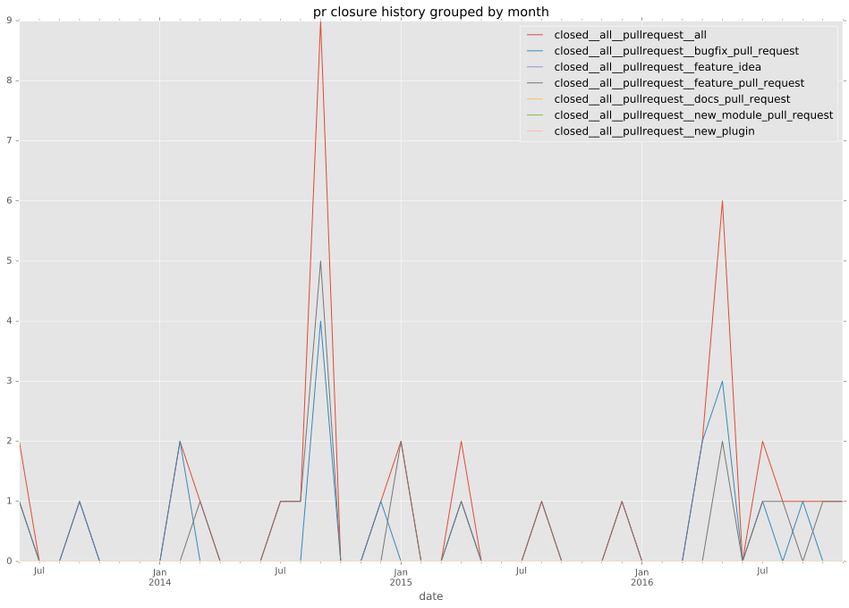
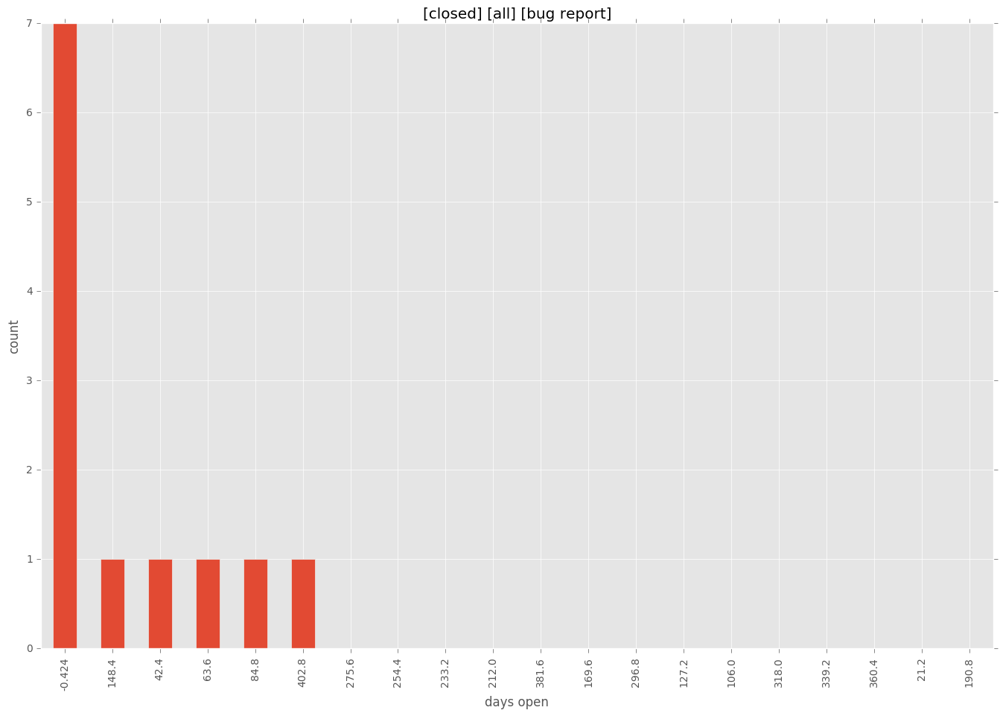

authors
- dirtyharrycallahan
- alxgu
- andytom
- robinro
- AnderEnder
maintainers
- robinro
contributors
- robinro : 86 commits
- dirtyharrycallahan : 24 commits
- AnderEnder : 15 commits
- alxgu : 11 commits
- kvar : 5 commits
- jpmens : 3 commits
- bmanojlovic : 3 commits
- mpdehaan : 2 commits
- kalabiyau : 2 commits
- greghaynes : 2 commits
- jctanner : 1 commits
- bcoca : 1 commits
total issue counts
unknown: 2
feature pull request: 19
pullrequest: 42
docs pull request: 1
bugfix pull request: 22
feature idea: 6
issue: 20
bug report: 12
issue history

pullrequest history


days open by issue type
bugfix pull request
count: 35
std: 62.9786945434
min: 0
max: 203
median: 1.0
mean: 32.4857142857
all
count: 85
std: 107.678907214
min: 0
max: 692
median: 7.0
mean: 56.5764705882
pullrequest
count: 0
std: nan
min: nan
max: nan
median: nan
mean: nan
docs pull request
count: 2
std: 0.0
min: 0
max: 0
median: 0.0
mean: 0.0
feature pull request
count: 28
std: 46.2969910001
min: 1
max: 172
median: 20.0
mean: 41.8214285714
feature idea
count: 6
std: 231.440417098
min: 91
max: 692
median: 237.5
mean: 283.666666667
issue
count: 0
std: nan
min: nan
max: nan
median: nan
mean: nan
bug report
count: 12
std: 122.042807939
min: 0
max: 424
median: 7.5
mean: 66.4166666667
closures grouped by total days open
